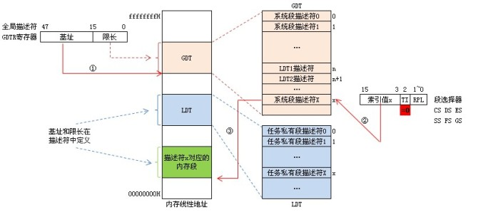
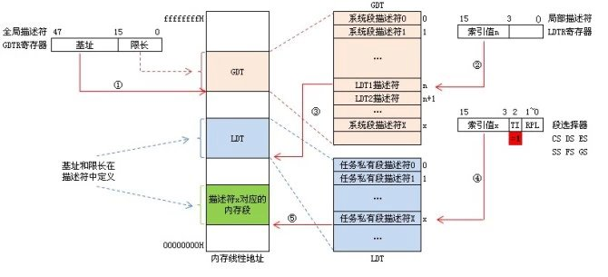

买了本罗老师的琢石成器,才看前3章就感觉晕晕忽忽，总体觉得要看懂这本书前提是必须DOS汇编,了解32位汇编基础.DOS汇编本人只看了王爽老师的汇编语言前11章，中断这块还没有看,看来不看还是不行的。转回来说,罗老师这本书前3章写的很乱，尤其是描述符这块，看了似懂非懂，通而不透。只能自己抽丝剥茧，捋清头绪，慢慢体会：
段选择器
32位汇编中16位段寄存器(CS、DS、ES、SS、FS、GS)中不再存放段基址,而是段描述符在段描述符表中的索引值,D3-D15位是索引值,D0-D1位是优先级(RPL)用于特权检查,D2位是描述符表引用指示位TI,TI=0指示从全局描述表GDT中读取描述符，TI=1指示从局部描述符中LDT中读取描述符。这些信息总称段选择器(段选择子).
段描述符
8个字节64位，每一个段都有一个对应的描述符。根据描述符描述符所描述的对象不同，描述符可分为三类：储存段描述符，系统段描述符，门描述符(控制描述符)。在描述符中定义了段的基址，限长和访问内型等属性。其中基址给出该段的基础地址，用于形成线性地址；限长说明该段的长度，用于存储空间保护；段属性说明该段的访问权限、该段当前在内存中的存在性，以及该段所在的特权级。
段描述符表
IA-32处理器把所有段描述符按顺序组织成线性表放在内存中，称为段描述符表。分为三类：全局描述符表GDT，局部描述符表LDT和中断描述符表IDT。GDT和IDT在整个系统中只有一张，而每个任务都有自己私有的一张局部描述符表LDT，用于记录本任务中涉及的各个代码段、数据段和堆栈段以及本任务的使用的门描述符。GDT包含系统使用的代码段、数据段、堆栈段和特殊数据段描述符，以及所有任务局部描述符表LDT的描述符。
GDTR全局描述符寄存器
48位，高32位存放GDT基址，低16为存放GDT限长。
LDTR局部描述符寄存器
16位，高13为存放LDT在GET中的索引值。
IA-32处理器仍然使用xxxx：yyyyyyyy（段选择器：偏移量）逻辑方式表示一个线性地址，那么是怎么得到段的基址呢？在上面说明中我们知道，要得到段的基址首先通过段选择器xxxx中TI位指定的段描述符所在位置：
当TI=0时表示段描述符在GDT中，如下图所示：① 先从GDTR寄存器中获得GDT基址。② 然后再GDT中以段选择器高13位位置索引值得到段描述符。③ 段描述符符包含段的基址、限长、优先级等各种属性，这就得到了段的起始地址（基址），再以基址加上偏移地址yyyyyyyy才得到最后的线性地址。

当TI=1时表示段描述符在LDT中，如下图所示：① 还是先从GDTR寄存器中获得GDT基址。② 从LDTR寄存器中获取LDT所在段的位置索引(LDTR高13位)。③ 以这个位置索引在GDT中得到LDT段描述符从而得到LDT段基址。④ 用段选择器高13位位置索引值从LDT段中得到段描述符。⑤ 段描述符符包含段的基址、限长、优先级等各种属性，这就得到了段的起始地址（基址），再以基址加上偏移地址yyyyyyyy才得到最后的线性地址。

此文章乃自此处转载，喜欢的话给原作者点个赞呗～